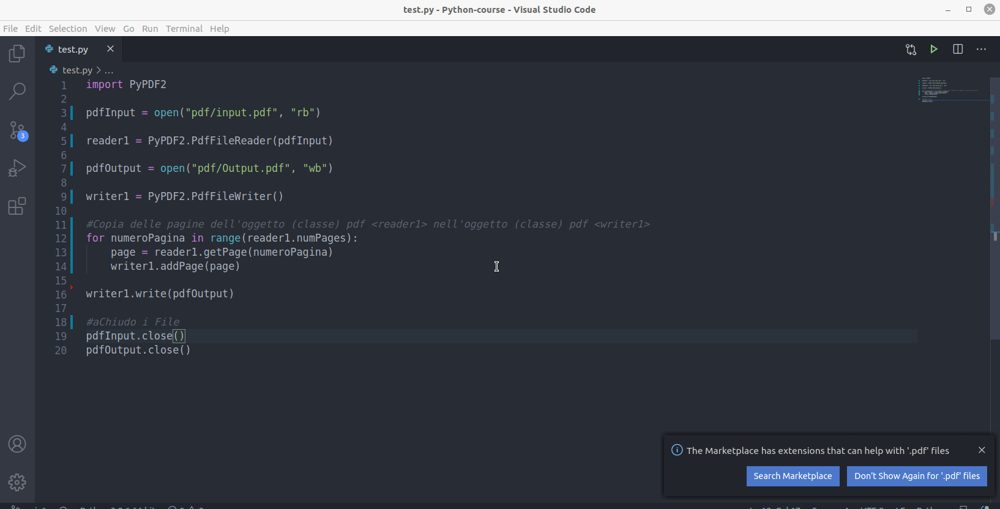
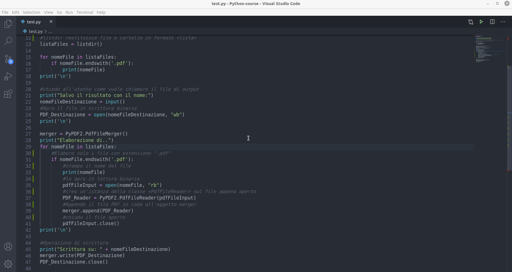

Lezione 12
PyPDF2 - Copia PDF
Il seguente script prende in input un pdf “input.pdf” e ne produce una copia sul file “Output.pdf” Faremo uso della proprietà della classe PdfFileReader:
numPages: Restituisce il numero delle pagine del file pdf dell’istanza (della classe PdfFileReader) si cui si legge la proprietà
import PyPDF2
pdfInput = open("pdf/input.pdf", "rb")
reader1 = PyPDF2.PdfFileReader(pdfInput)
pdfOutput = open("pdf/Output.pdf", "wb")
writer1 = PyPDF2.PdfFileWriter()
#Copia delle pagine dell'oggetto (classe) pdf <reader1> nell'oggetto (classe) pdf <writer1>
for numeroPagina in range(reader1.numPages):
page = reader1.getPage(numeroPagina)
writer1.addPage(page)
writer1.write(pdfOutput)
#aChiudo i File
pdfInput.close()
pdfOutput.close()

PyPDF2 - Merge All pdf
Il seguente script unisce tutti i file pdf presenti nella root directory salvandoli con un nome stabilito dall’utente. Faremo uso di:
- Modulo os è un modulo che contiene funzioni per interagire con il sistema operativo per la manipolazione di file e processi, os — Miscellaneous operating system interfaces.
Nota:
Per questo esercizio importeremo solo il metodolistdir()del modulo os:from os import listdir -
listdir(path): Metodo del modulo os. Elenca file e cartelle specificate nella path-directory come parametro. Se non viene specificato nessun parametro restituisce i file della root-directory. Viene restituita una lista
Python3 os.listdir () method - Metodi su stringa
endswith(myString): Restituisce true se la stringa a cui applichiamo il metodo termina con la stringa indicata come parametro, myString
Altre funzionalità del modulo PyPDF2.
- classe
PdfFileMerger: Inizializza un oggetto PdfFileMerger. PdfFileMerger unisce più PDF in un unico PDF. Restituisce un’istanza della classe PdfFileMerger, PyPDF2 - The PdfFileMerger Class. - metodo
append(myPDF)della classePdfFileMerger: Concatena tutte le pagine di un oggetto PDF passato come parametro, myPDF, alla fine del file PDF a cui si applica il metodo
Riporto lo script completo:
#Merge all pdf files
from os import listdir
import PyPDF2
print("**********************************************")
print("Unisco i file pdf presenti in questa directory")
print("**********************************************")
#Non devo specificare <os.listdir> poichè ho spcificato l'importazione <from os import listdir>
#Se avessi usato <import os> avrei dovuto scrivere <os.listdir>
#listdir restituisce file e cartelle in formato <lista>
listaFiles = listdir()
for nomeFile in listaFiles:
if nomeFile.endswith('.pdf'):
print(nomeFile)
print('\n')
#chiedo all'utente come vuole chiamare il file di output
print("Salvo il risultato con il nome:")
nomeFileDestinazione = input()
#Apro il file in scrittura binaria
PDF_Destinazione = open(nomeFileDestinazione, "wb")
print('\n')
merger = PyPDF2.PdfFileMerger()
print("Elaborazione di..")
for nomeFile in listaFiles:
#Elaboro solo i file con estensione ".pdf"
if nomeFile.endswith('.pdf'):
#stampo il nome del file
print(nomeFile)
#lo apro in lettura binaria
pdfFileInput = open(nomeFile, "rb")
#creo un'istanza della classe <PdfFileReader> sul file appena aperto
PDF_Reader = PyPDF2.PdfFileReader(pdfFileInput)
#Appendo il file PDF in coda all'oggetto merger
merger.append(PDF_Reader)
#chiudo il file aperto
pdfFileInput.close()
print('\n')
#Operazione di scrittura
print("Scrittura su: " + nomeFileDestinazione)
merger.write(PDF_Destinazione)
PDF_Destinazione.close()
print("Finito..")
